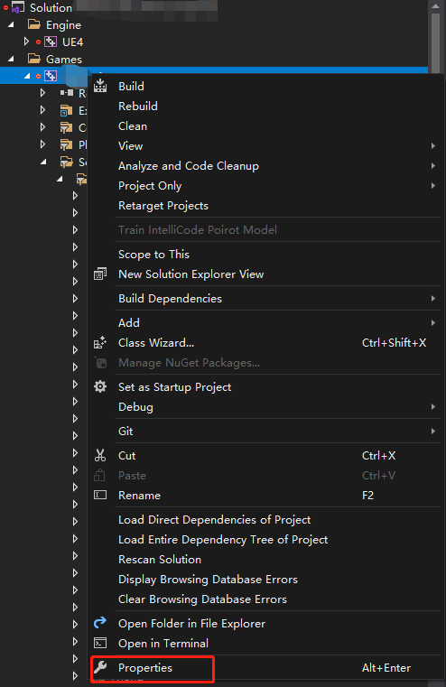
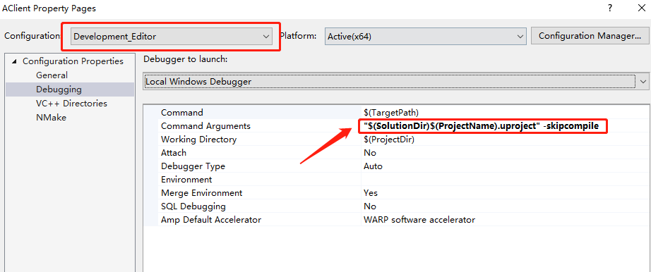
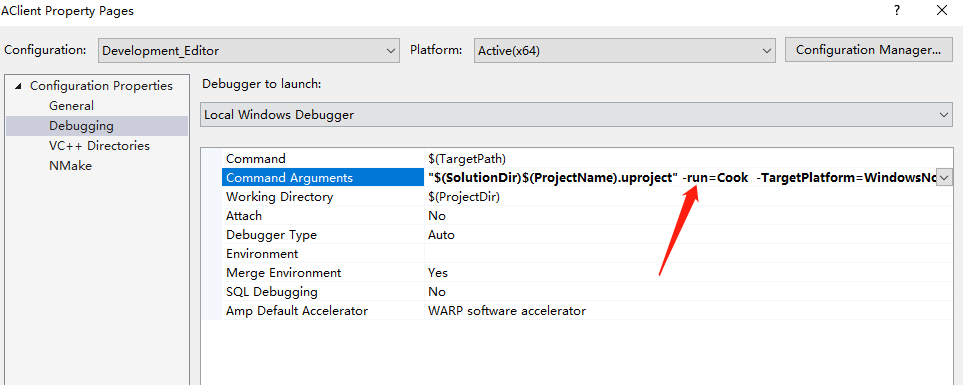

How To Debug UE4 Cooking Stage?
When an error is triggered during cooking, the break point would not be hit in your visual studio because another UE4Editor process is invoked to run cooking command.
Without help of Visual Studio, it must be very hard to address and fix your cooking error.
In Visual Studio, right-click on your project->Properties:

Set the configuration to Development_Editor or Debug_Editor, and you can find the Command Arguments in the Debugging tab:

Usually the default value should be "$(SolutionDir)$(ProjectName).uproject" -skipcompile. And change it to "$(SolutionDir)$(ProjectName).uproject" -run=Cook -TargetPlatform=WindowsNoEditor -unversioned -CookAll:

And it’s done. Hit Local Windows Debugger, and start debuging your cooking stage!
How To Cook A Single Asset?
It seems that the HotPatcher plugin has already provided us a OnCookPlatform function, which cooks our selected assets in BrowserContent:
1 | void FHotPatcherEditorModule::OnCookPlatform(ETargetPlatform Platform) |
We can easily create an FAutoConsoleCommand to manually achieve this feature.
How To Get Rid Of Property When Cooking?
We might want to get rid of some properties during cooking stage. For example, RawAnimationData is supposed to be stripped for cooked builds in consideration of memory.
For A Non-UPROPERTY Member
It might get really complicated to manage since we need to handle PostLoad and Serialize function manually, but we can get more flexibility.
If you want to remove this property, use FPlatformProperties::RequiresCookedData() function to determine if you need it or not.
For A UPROPERTY Member
In a more complicated situation if you still need to handle this property during cooking stage, and frankly speaking, this is exactly what I needed these days. We might need a hook to get rid of this property.
Sadly, I cannot tell you what precisely I needed to do because of secrecy.
We can remove its content in UObject::PreSave function.
In a cooked build, PreSave function would be called before save-serializing happens. That is a wonderful hook for you to modify this data.
About Anim Sequence Compression
When an anim sequence get compressed because of any reason. A FString called FinalDDCKey is generated, and it is used by DDC to find whether there has already been a compressed sequence.
You can check out UAnimSequence::RequestAnimCompression for details.
AssetDDCKey
We can get a AssetDDCKey by GetAnimSequenceSpecificCacheKeySuffix function. For example, anim sequence ThirdPersonWalk has a AssetDDCKey like:
BE37EBBAFBBA3750CECFF71FCA0778E996BD3AFA415DB49D91DC3799835471D700000000000000000000000000000000_000_NoAdditiveGuid_0000803F00000000CDCCCC3D000000000004000004CD5841CCCCCC3E9A99993E9A99993EA3623BAFF72E0049A52AAC206838CFE9000000000000000001000000000070429A99993E9A99993E
You can figure out how this key is generated by checking out GetAnimSequenceSpecificCacheKeySuffix function. But there is something needs to be mentioned about Bone Compression Setting.
A UAnimBoneCompressionSettings populates its DDC Keys while AssetDDCKey of an anim sequence is generated. And for each compression method would also populates its DDC Key, too.
This is needed because of we might adjust compression parameters. If any compression parameter is changed, a different key is generated so that the engine can decide whether to re-compress the anim sequence.
What Happens If A DDC Key Is Too Long?
Let’s still take ThirdPersonWalk for example. Its FinalDDCKey is like:
AnimSeq_EFB2D82D0DDA4A4E9D0D9AC41A9C557A_0_BE37EBBAFBBA3750CECFF71FCA0778E996BD3AFA415DB49D91DC3799835471D700000000000000000000000000000000_000_NoAdditiveGuid_0000803F00000000CDCCCC3D000000000004000004CD5841CCCCCC3E9A99993E9A99993EA3623BAFF72E0049A52AAC206838CFE9000000000000000001000000000070429A99993E9A99993E
If you continue digging into how DDC get its cached data in FDerivedDataLimitKeyLengthWrapper::GetCachedData function. You should find GetShortenKey() is called if the Cache Key is too long.
A hash string is calculated and appended at the tail of a new shorten key, whose max length is defined by MAX_BACKEND_KEY_LENGTH. Now the shorten key is like:
AnimSeq_EFB2D82D0DDA4A4E9D0D9AC41A9C557A_0_BE37EBBAFBBA3750CECFF71FCA0778E996B__43B4BAB8FB89DFD6EDC705E28B6B0F9F69E8D7D6
But becareful! Since a hash value is used. Hash collide can still happens.